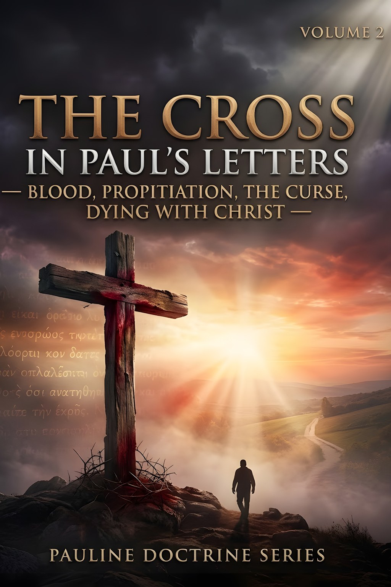
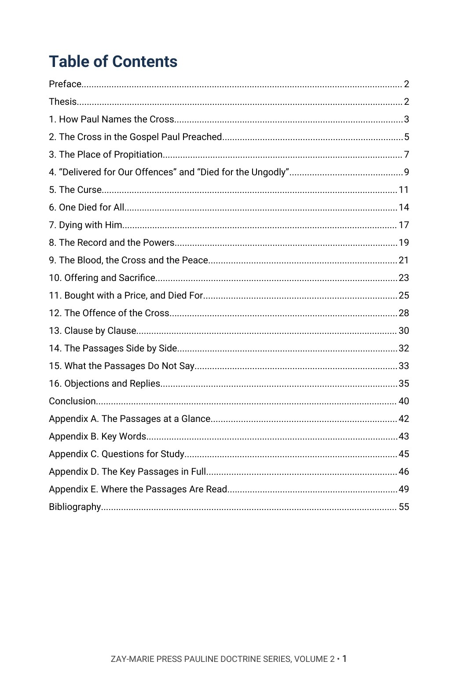
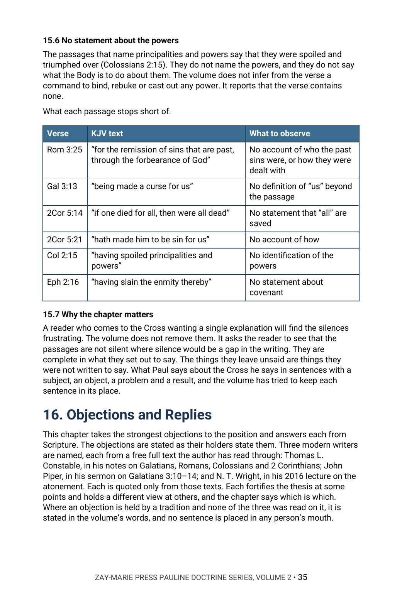
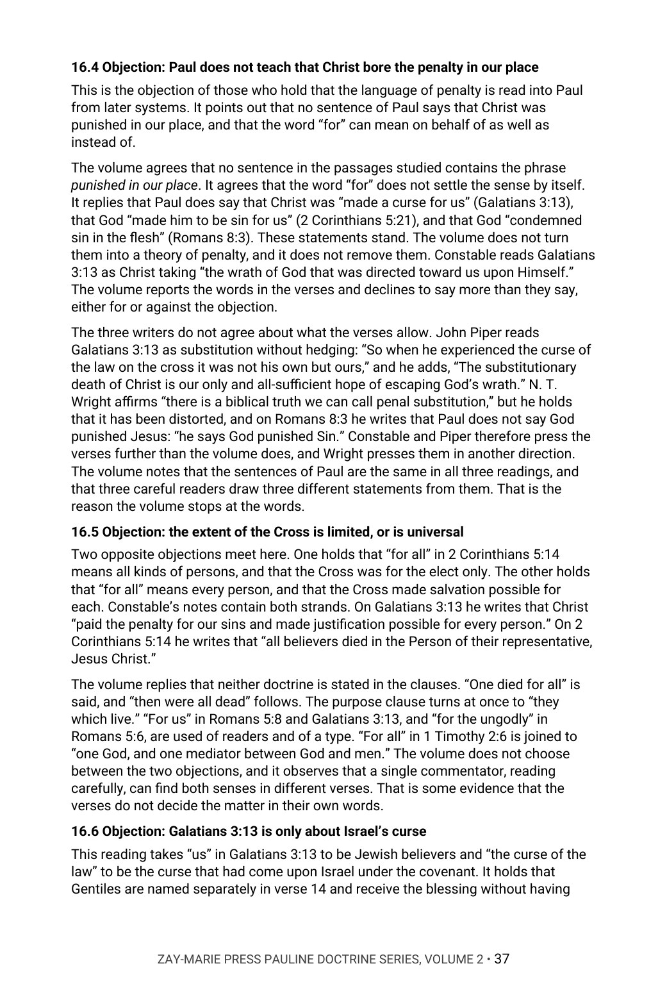

The Cross in Paul’s Letters
What Each Passage Says the Cross Did
Paul names the Cross in many ways. Do his passages give one account of what it did?
In Romans 3 the Cross is the place of propitiation. In Galatians 3 Christ is made a curse for us. In 2 Corinthians 5 one died for all, in Romans 6 and Colossians 2 believers died with him, in Colossians 2 a record is taken out of the way, and in Ephesians 2 the Cross makes peace. This commentary reads each passage in its own place, in the King James text, one clause at a time.
It argues that these are not rival theories and not one doctrine said six times: each passage answers a different problem, and each is read as it states itself. In Chapter 16 it sets its reading beside modern writers who see it differently.
New to the framework? The Digital Studies teach the distinctions this volume relies on. Start with the Digital Studies →
A Commentary That Argues a Position
This volume does not survey the theories of the atonement and leave the choice to the reader. It says what the author believes Paul teaches when he writes about the death of Christ, gives the evidence from Paul’s own sentences, and answers the strongest objections in the objectors’ own words.
It is the second volume of the Pauline Doctrine Series, each volume of which is built around one narrower question on a large subject in Paul’s letters. It is a different kind of book from the Digital Studies, which report what a passage says. Scripture is quoted from the King James Version throughout, checked word for word, and the writers named in Chapter 16 are quoted only from words the author has read in full. Its own question is narrow: what does each of Paul’s passages say the Cross did, to what, for whom, and with what result?
Related Reading
Digital Studies
Study 53 — Redemption Traces redemption in its own settings, as written; this volume reads the price and the blood where Paul sets them against the Cross.
Study 54 — Justification Reports the righteous verdict and where it is said to rest; this volume reads Romans 3:21–26 and 4:25 for what they say the Cross did.
Study 42 — One Baptism Defines baptism from Scripture; this volume cites it for the baptism of Romans 6 and reads dying with Christ from the passages.
Commentary Series
Pauline Doctrine Series, Volume 1 — Adam and Christ Reads Paul’s two Adam passages; this volume asks what each of his passages on the Cross says it did.
Typology Commentary Series, Volume 4 — Exodus Typology Argues Christ is named as the Passover and the Lamb; this volume reads 1 Corinthians 5:7 only as one of Paul’s sentences on the Cross.
Bible Companion Series
Bible Companion — Romans Interprets the book of Romans through its key passages in five pages.
Bible Companion — Galatians Interprets the book of Galatians through its key passages in five pages.
Bible Companion — Colossians Interprets the book of Colossians through its key passages in five pages.
From the Question to the Objections
The Names of the Cross
Read the words Paul uses for the Cross, and see how each one sits in its own sentence.
The Place of Propitiation
Read Romans 3:21–26 clause by clause and note what God is said to have set forth, to declare what, and what the sentence leaves unsaid.
The Curse
Follow Galatians 3:10–14 from what the law pronounces to the blessing, and mark whose word “us” is.
One Died for All
Read 2 Corinthians 5:14–21 and trace the “all” that follows the “one.”
Dying with Him
Set Romans 6, Galatians 2:19–21 and Colossians 2 and 3 side by side and trace what is said to be accomplished and what is asked of the believer.
The Objections
Hear named modern writers who read the passages differently, then weigh each reply against the text.
Read the Word in Its Context
1 Corinthians 15:3
“For I delivered unto you first of all that which I also received, how that Christ died for our sins according to the scriptures;”
Romans 3:25
“Whom God hath set forth to be a propitiation through faith in his blood, to declare his righteousness for the remission of sins that are past, through the forbearance of God;”
Galatians 3:13
“Christ hath redeemed us from the curse of the law, being made a curse for us: for it is written, Cursed is every one that hangeth on a tree:”
2 Corinthians 5:14
“For the love of Christ constraineth us; because we thus judge, that if one died for all, then were all dead:”
Romans 6:6
“Knowing this, that our old man is crucified with him, that the body of sin might be destroyed, that henceforth we should not serve sin.”
Colossians 2:14
“Blotting out the handwriting of ordinances that was against us, which was contrary to us, and took it out of the way, nailing it to his cross;”
Ephesians 2:16
“And that he might reconcile both unto God in one body by the cross, having slain the enmity thereby:”
Colossians 1:20
“And, having made peace through the blood of his cross, by him to reconcile all things unto himself; by him, I say, whether they be things in earth, or things in heaven.”
What This Book Sets Out to Do
Take any two of the passages and ask whether they answer the same problem.
If they do, the passages may be one doctrine said twice and the thesis fails. If they answer different problems, the thesis stands, and the reader will have seen why Paul never gives the Cross a single name.
Preview the Volume Before You Purchase
Click any page to enlarge it for reading.


Table of Contents
See the full order of the argument, from the Preface to the Bibliography.



The Argument at Work
See the method: what each passage says and what it leaves unsaid, set out beside the verse.


Objections and Replies
See the modern voices named, each objection in their words, and the answer to it.
A Full Commentary on the Cross in Paul
56-Page Digital PDF
Cover and a fully numbered interior.
Sixteen Chapters
From the names of the Cross to the objections and replies.
Objections and Replies
Modern voices named, with each objection answered from the text.
Clause by Clause
Romans 3, Galatians 3, 2 Corinthians 5, Romans 6, Colossians 2 and Ephesians 2 read one clause at a time, with what each leaves unsaid.
Comparison Tables
The passages set side by side.
Conclusion
The position restated in full, with a closing table.
Five Appendices
The passages at a glance, the key words in Roman letters, study questions, the key passages in full and a verse-by-verse index of where the passages are read.
Bibliography
Every work cited, listed by author and title.
The Cross in Paul’s Letters
56-page digital PDF · For personal use